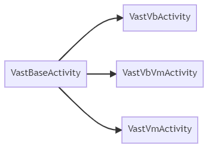
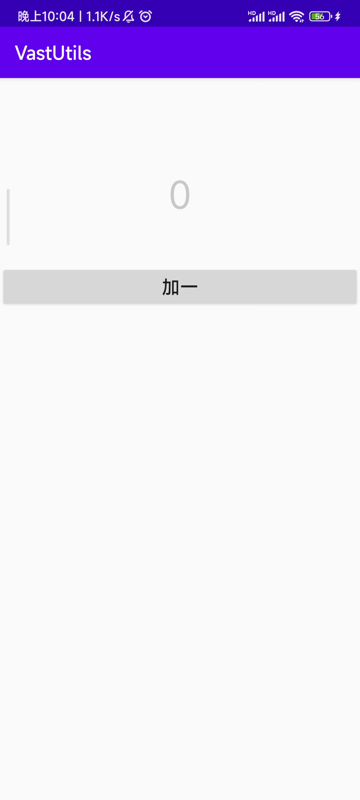

VastBaseActivity
VastBaseActivity 是基于 AppCompatActivity 进行封装的，同时基于 VastBaseActivity 又进行二次封装，如图所示：

快速使用
我们以 VastVbVmActivity 为例，你无需去手动初始化 ViewBinding 和 ViewModel
下面展示了基本使用
class BaseVbActivity : VastVbVmActivity<ActivityBaseVbBinding, BaseVM>() {
override fun initView(savedInstanceState: Bundle?) {
mBinding.addOne.setOnClickListener {
mViewModel.addOne()
}
mViewModel.count.observe(this){
mBinding.count.text = it.toString()
}
}
}

隐藏ActionBar
class BaseVbActivity : VastVbVmActivity<ActivityBaseVbBinding, BaseVM>() {
override fun initView(savedInstanceState: Bundle?) {
enableActionBar = false // 不显示ActionBar
... // 其他设置
}
}

启动全面屏模式
class BaseVbActivity : VastVbVmActivity<ActivityBaseVbBinding, BaseVM>() {
override fun initView(savedInstanceState: Bundle?) {
enableFullScreen = true // 启用全面屏
... // 其他设置
}
}